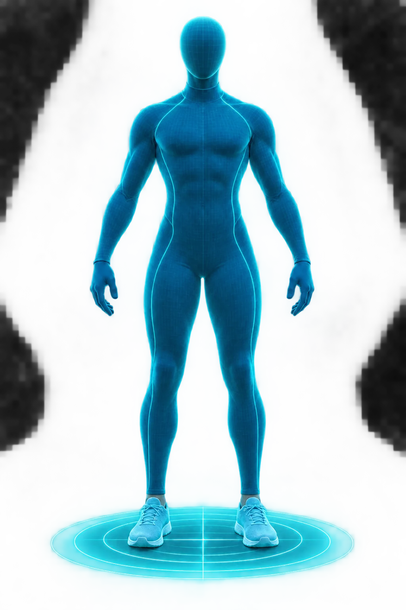
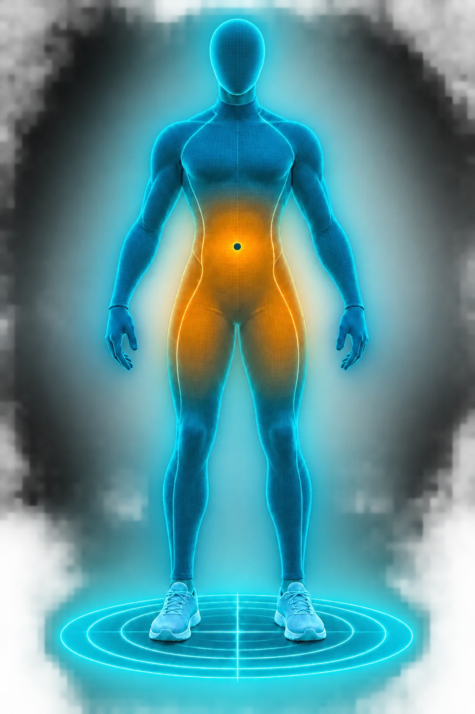

Nenhuma medição para exibir.
PAINEL BIOMÉTRICO
Mesmas faixas de acompanhamento por sexo e idade, com ou sem origem informada. Veja a fonte e os limites ao tocar no indicador.
HOLO-BODY 3D ILUSTRAÇÃO


Ilustração corporal
Holograma
Atenção
Índice elevado
RCQ: --
INSPEÇÃO DOS INDICADORES
--
--
--
Resumo combinado • peso, gordura e músculo
Ajustes rápidos de composição
Meta Gordura %22.0%
Meta Músculo %34.0%
Meta VisceralNível 5